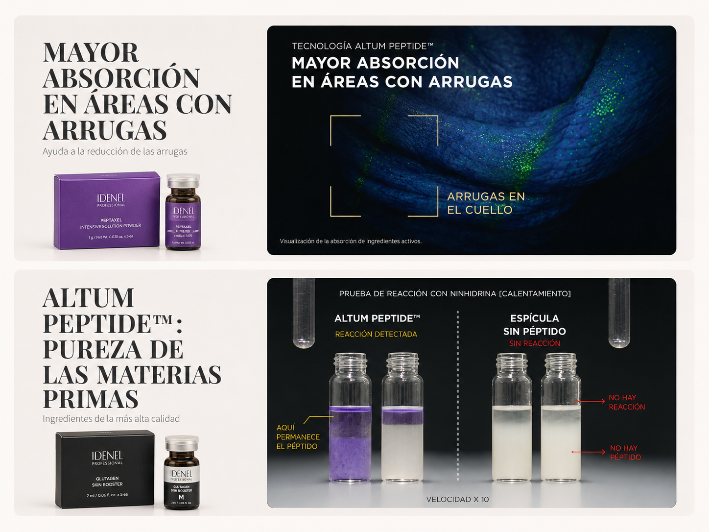
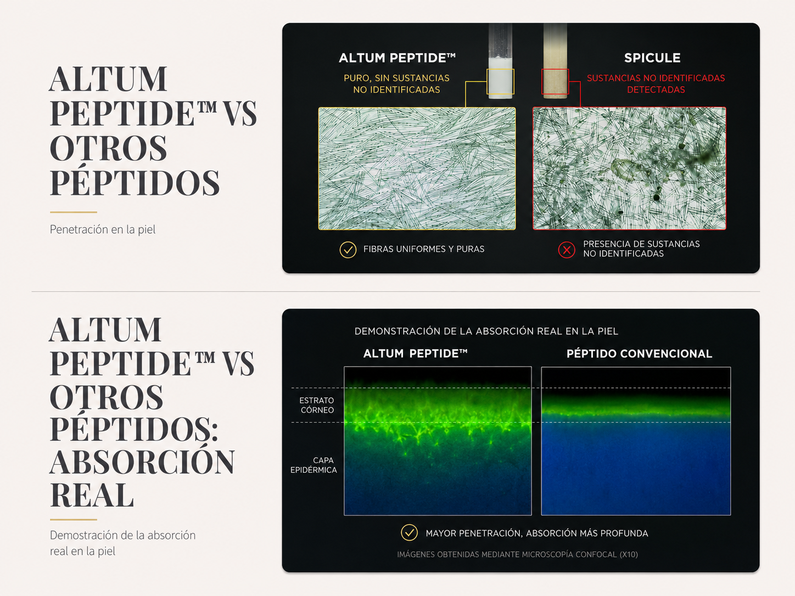

PEPTAXEL
Programa profesional con Altum™ Needling System, basado en microespículas de origen marino y activos cosméticos diseñados para protocolos personalizados según la condición de cada piel.


Resultados presentados como material informativo de la marca. La respuesta puede variar según cada tipo de piel y protocolo profesional.
Altum™ Peptide + Altum™ Needling System
Altum™ Peptide combina péptidos con microespículas refinadas derivadas de esponja marina. Este sistema ayuda a transportar activos cosméticos hacia la epidermis y favorece la renovación superficial de la piel.
Actúan como un sistema de entrega cosmética que ayuda a mejorar la penetración de activos en la superficie cutánea.
Las microespículas permanecen temporalmente en contacto con la piel y apoyan la liberación progresiva de ingredientes activos.
PEPTAXEL se trabaja como protocolo tópico profesional. No se inyecta. Su acción se basa en el contacto de microespículas con la piel.



Skin booster profesional con microespículas
PEPTAXEL permite personalizar el tratamiento según las principales preocupaciones cutáneas: envejecimiento, flacidez, manchas, textura irregular, sensibilidad, poros visibles y piel con tendencia a imperfecciones.
Apoyo cosmético para piel con signos visibles de envejecimiento, líneas finas, flacidez y pérdida de elasticidad.
Protocolos orientados a piel apagada, tono irregular, pigmentación visible y pérdida de vitalidad.
Trabajo cosmético sobre textura áspera, poros visibles, marcas y piel con tendencia a imperfecciones.
Cómo se prepara y aplica PEPTAXEL
PEPTAXEL debe ser utilizado por profesionales capacitados. El protocolo se basa en la mezcla de polvo + concentrado y aplicación tópica con microespículas.
Definir objetivo de tratamiento
Evaluar la piel y definir si el objetivo principal será firmeza, arrugas, manchas, luminosidad, textura, poros o piel con tendencia a imperfecciones.
Elegir polvo y concentrado
Seleccionar el polvo PEPTAXEL correspondiente y combinarlo con el concentrado indicado: Regen Concentrate o Brightening Concentrate.
Preparar el producto
Mezclar el polvo con el concentrado correspondiente hasta obtener una preparación homogénea, siguiendo el protocolo profesional de la marca.
Aplicar sobre piel limpia
Aplicar la mezcla sobre piel limpia. No se inyecta. La acción ocurre por el contacto de las microespículas con la superficie cutánea.
No retirar ni lavar inmediatamente
Después de la aplicación, permitir que las microespículas permanezcan en contacto con la piel. No lavar el rostro inmediatamente después del protocolo.
Calma, hidratación y protección
Priorizar hidratación, reparación de barrera y protección solar. Evitar activos irritantes y calor excesivo durante los primeros días.
Combinaciones PEPTAXEL según necesidad de piel
Estas combinaciones ayudan a ordenar la recomendación profesional según el objetivo principal de cada paciente o cliente.
Intensive Solution Powder + Regen Concentrate
Cuidado intensivo antienvejecimiento para piel flácida, arrugada o con pérdida de firmeza.
- Objetivo: firmeza, lifting cosmético y regeneración.
- Ideal para: piel madura, líneas finas y pérdida de elasticidad.
- Apoyo: hidratación, reparación cosmética y barrera cutánea.
Intensive Solution Powder + Brightening Concentrate
Antiedad y luminosidad para piel apagada, con tono desigual o signos visibles de envejecimiento.
- Objetivo: luminosidad, elasticidad y tono uniforme.
- Ideal para: piel opaca, manchas visibles y flacidez.
- Apoyo: mejora cosmética del aspecto general de la piel.
TR Solution Powder + Regen Concentrate
Cuidado anti-imperfecciones y regenerador para piel con tendencia acneica, sensible o con textura irregular.
- Objetivo: piel problemática, poros y recuperación cosmética.
- Ideal para: marcas, sensibilidad, textura y poros dilatados.
- Apoyo: calma, hidratación y fortalecimiento de barrera.
TR Solution Powder + Brightening Concentrate
Cuidado para piel con tendencia acneica y luminosidad, orientado a marcas, tono irregular e hiperpigmentación visible.
- Objetivo: tono más uniforme, luminosidad y textura.
- Ideal para: marcas post-acné, manchas y piel apagada.
- Apoyo: mejora cosmética del aspecto de imperfecciones.
Programa PEPTAXEL
El programa puede incluir diferentes polvos y concentrados para adaptar el tratamiento a cada necesidad estética.

Qué hacer después del tratamiento
Después de un protocolo con microespículas, la piel puede sentirse sensible, seca, tirante o con picor. El foco debe estar en hidratación, calma, recuperación de barrera y protección solar.
No lavar el rostro inmediatamente después del protocolo. Evitar maquillaje, calor excesivo, sauna, ejercicio intenso, alcohol y productos activos.
Evitar limpieza agresiva. Al día siguiente se puede lavar suavemente con agua fría o tibia. Aplicar hidratación, productos calmantes y protección solar según indicación profesional.
Las microespículas pueden permanecer temporalmente en contacto con la piel antes de ser expulsadas naturalmente. Durante este período se recomienda priorizar hidratación, calma y reparación de barrera.
Evitar exfoliación, sauna, vapor, piscina, ejercicio intenso y exposición solar directa.
Los activos fuertes como retinoides o ácidos pueden reintroducirse solo si la piel está recuperada y según indicación profesional.
Guía rápida para reacciones esperadas
El picor puede aparecer por la acción de las microespículas. Reforzar hidratación, usar crema calmante y evitar rascar. Si el picor es intenso o persistente, consultar al profesional tratante.
El enrojecimiento leve puede formar parte de la respuesta posterior. Mantener la piel hidratada y evitar calor, sol directo, sauna, alcohol y ejercicio intenso.
No retirar la piel ni exfoliar. La descamación debe caer de forma natural. Aplicar hidratación frecuente y productos de soporte de barrera.
Evitar el lavado inmediato después del tratamiento. Al día siguiente, limpiar suavemente con agua fría o tibia y evitar limpiadores agresivos.
Evitar maquillaje pesado durante los primeros días. Si la piel está tranquila, puede usarse maquillaje ligero después de aplicar protector solar.
Evitar retinoides, ácidos exfoliantes, vitamina C muy activa, exfoliantes físicos, limpiadores agresivos y productos con microagujas o espículas durante los primeros días.
Para combinar con otros procedimientos, se debe dejar un intervalo adecuado y seguir la indicación del profesional. Se recomienda espaciar procedimientos para evitar sobreestimular la piel.
Producto orientado a profesionales
PEPTAXEL está pensado para protocolos profesionales realizados por personas capacitadas. La información de esta página es comercial y educativa; no reemplaza la capacitación, evaluación de piel ni indicación del profesional tratante.
Consulta disponibilidad profesional
Escríbenos por WhatsApp para información comercial, capacitación, protocolos profesionales y disponibilidad en Chile.